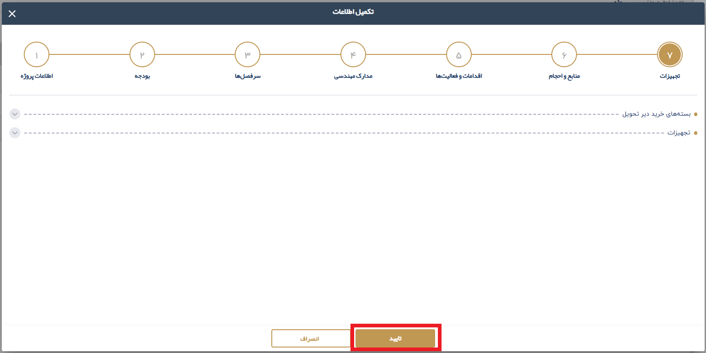

2.2.3. بررسي در خواست توسط نمايندگان تامين و تدارکات و همچنين توسعه صنعتي
در این مرحله، درخواست نماینده محترم پیمانکار بعد از بررسی توسط مشاور و مجری محترم و دریافت تایید ایشان به دو بخش
نمایندگان تامین و تدارکات و همچنین توسعه صنعتی
ارسال می شود. در صورتی که از نظر ایشان مشکلی در اطلاعات وجود نداشته باشد، درخواست تایید می شود.
پس از تایید مرحله از طرف این دو بخش در نهایت این مرحله پیشرفت پروژه بسته خواهد شد و در کارتابل کارفرمای محترم درخواست به حالت تایید شده تغییر وضعیت میدهد.